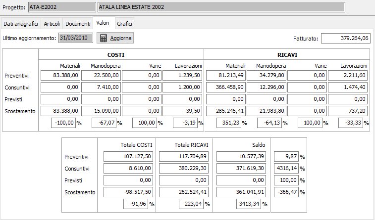
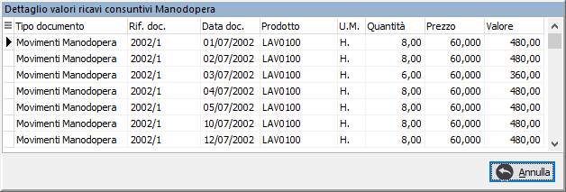

Valori
In questa sezione sono visualizzati i valori progressivi del progetto.
Nella parte alta vi è un campo che indica la data dell’ultimo aggiornamento seguito dal bottone “Aggiorna” che esegue il calcolo e l’aggiornamento dei valori del progetto corrente.
La sezione rimanente è suddivisa in tre parti:
i costi suddivisi per tipo di movimento ( Materiali, Manodopera, Vari, Lavorazioni ) e per tipo di costo ( Preventivo, Consuntivo, Previsto ) e lo scostamento (calcolato come rapporto fra i costi consuntivi aumentati dei previsti e i costi preventivi).
i ricavi suddivisi con gli stessi criteri utilizzati per la parte relativa ai costi.
il riepilogo generale costi e ricavi con relativo saldo.

Se gestito in configurazione il dettaglio dei valori, facendo doppio clic sulle singole caselle dei valori viene visualizzato il dettaglio dei documenti e dei movimenti che lo compongono.
